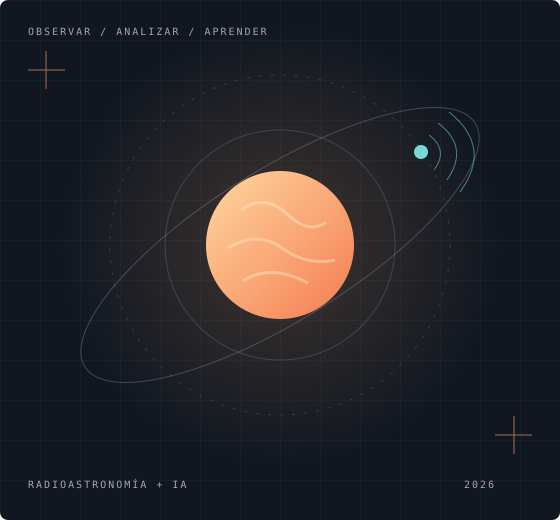
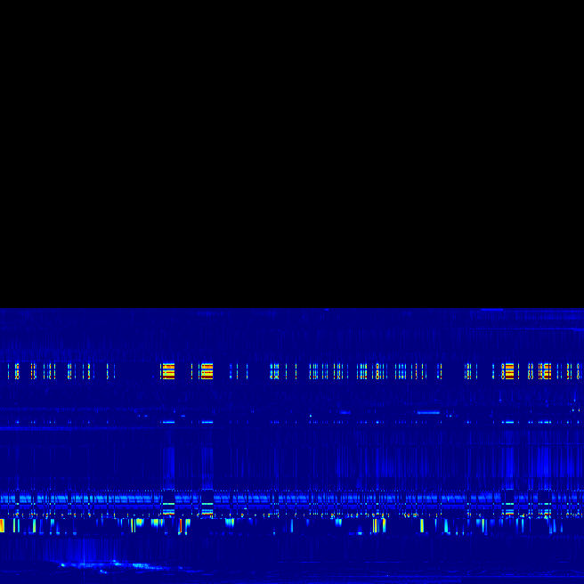
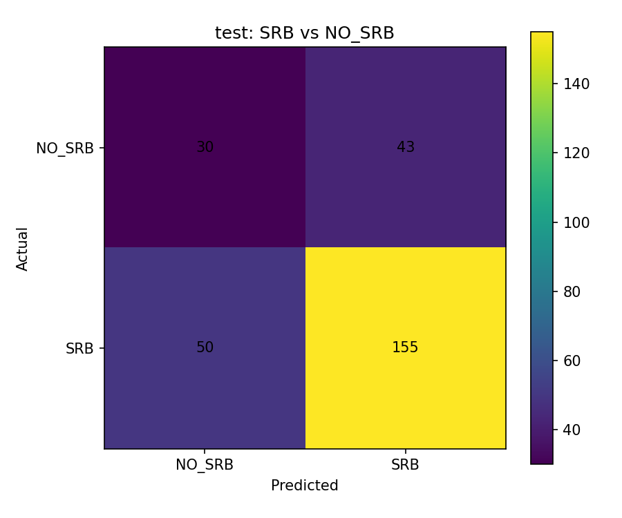

Python y análisis de datos
Preparación de datos, análisis de métricas y representación de resultados.
[Tu título profesional o carrera]
Mi interés está en la inteligencia artificial, el análisis de datos y su aplicación a problemas científicos. En este proyecto exploro el reconocimiento de eventos de radio solar mediante aprendizaje profundo y observaciones de e-CALLISTO.
[Completa esta presentación con tus habilidades, intereses y áreas de especialización.]

Tecnologías presentes en el proyecto.
Mi experiencia personal está por completar.
Preparación de datos, análisis de métricas y representación de resultados.
Clasificación de imágenes, aprendizaje por transferencia y evaluación de modelos.
Búsqueda de hiperparámetros y registro de configuraciones y resultados.
[Añade otras habilidades y tu nivel de experiencia en cada herramienta.]
Información académica por completar.
[Universidad o institución]
[Formación complementaria, cursos o áreas de interés académico.]
Reconocimiento de ráfagas de radio solar de tipos II, III y IV en observaciones de las estaciones e-CALLISTO.
El objetivo es distinguir patrones en espectrogramas y separar muestras con eventos solares de aquellas sin SRB. El proyecto combina preparación de imágenes y clasificadores de aprendizaje profundo para apoyar el análisis de las observaciones.
SRB significa Solar Radio Burst, o ráfaga de radio solar. El sistema se encuentra en desarrollo; los experimentos publicados permiten evaluar avances de los clasificadores.
Conocer la red e-CALLISTO ↗Imágenes organizadas en cuatro etiquetas: II, III, IV y No SRB. El repositorio incluye scripts de preprocesamiento con interpolación PCHIP y relleno de huecos.
Ver el dataset ↗Base preentrenada en ImageNet y clasificación binaria. Los scripts exploran tamaño de imagen, batch size, tasa de aprendizaje, unidades densas y dropout.
Ver los scripts de entrenamiento ↗Cascada planteada para el proyecto.
Evaluación integral pendiente.
Identificar las muestras tipo III y enviar las restantes al siguiente clasificador.
Separar las muestras sin evento de radio solar de las clases restantes.
Distinguir las dos clases de eventos que llegan a la última decisión.
El repositorio también contiene experimentos independientes de SRB (II + III + IV) frente a NO_SRB. Sus métricas no equivalen al rendimiento de esta cascada.
Muestras reales del repositorio.
La clase corresponde a su carpeta de origen.

Las imágenes muestran la distribución de la emisión de radio en tiempo y frecuencia. Estos ejemplos se presentan como muestras del dataset, sin atribuirles una predicción del modelo.
Resultados de prueba del clasificador SRB frente a NO_SRB, ejecución stage2_block5_w060_040_lr1em07_v5. Son resultados de un experimento publicado, no una evaluación final ni una selección del mejor modelo.
185 aciertos entre 278 muestras de prueba.
Promedio de F1 de las dos clases, con el mismo peso por clase.
Área bajo la curva ROC registrada en la evaluación.

El conjunto de prueba contiene 73 muestras NO_SRB y 205 SRB. El recall de SRB es 75,61 %, mientras que el de NO_SRB es 41,10 %; todavía hay margen para mejorar la separación de ambas clases.
Trabajo en curso. La clasificación tipo III y la distinción II/IV forman parte de la arquitectura propuesta. La evaluación conjunta de las tres decisiones está pendiente.
Fuente: archivos del experimento en GitHub ↗. Datos consultados el 3 de noviembre de 2026.
Para conversar sobre IA,
datos y el proyecto.